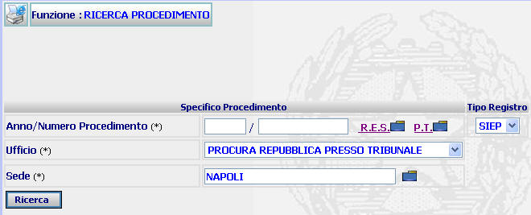
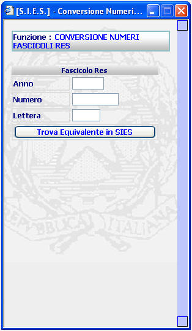
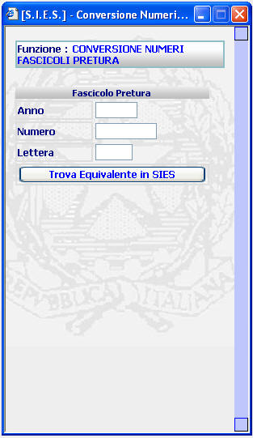
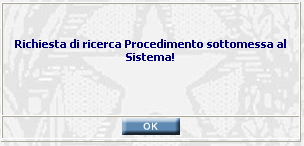
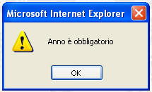
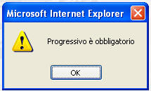

GENERALITA'
RICERCA ALTRE BDI -
RICERCA PROCEDIMENTO: La funzione prescelta
consente di effettuare la ricerca di un titolo esecutivo di una Procura
appartenente ad altro Distretto
LE MASCHERE VIDEO
La funzione
in esame viene realizzata attraverso
l'utilizzo della seguente maschera

Peraltro,
selezionando i pulsanti
e ,
vengono visualizzate le
seguenti maschere:
 |
Selezionando il pulsante
viene visualizzata la maschera seguente, che consente di
convertire i numeri dei vecchi procedimenti di esecuzione iscritti con il
sistema R.ES. e contenenti anche un carattere alfabetico (da inserire nel
campo "Lettera") in un numero riconoscibile dal sistema SIES
|

|
Selezionando il pulsante
viene visualizzata la maschera seguente, che consente di
convertire i numeri dei vecchi procedimenti di esecuzione iscritti dalle
soppresse Procure Circondariali ed eventualmente contenenti anche un
carattere alfabetico (da inserire nel campo "Lettera") in un numero
riconoscibile dal sistema SIES |

COME FARE PER ...
Per ricercare un
procedimento Siep di una Procura
appartenente ad altro
Distretto, l'utente deve:
1.
Compilare i campi relativi all'Anno/Numero Procedimento
2. Selezionare il tipo di Procura dalla tendina
3.
Inserire o selezionare tramite la
lista predefinita
la sede della Procura
4.
Agire sul pulsante
;
viene in tal modo visualizzato il seguente messaggio

e successivamente la maschera
dettaglio procedimento da
trasferire
CAMPI
I dati che consentono di
ricercare un atto sono i seguenti:
| NOME |
DESCRIZIONE |
| Anno/Numero Procedimento |
Campo (obbligatorio) nel quale va
inserito l'ano ed il numero del procedimento Siep che si vuole
ricercare. |
| Ufficio |
il sistema propone l'Ufficio Procura della Repubblica.
E' possibile selezionare altra voce dalla tendina. |
| Sede |
inserire il comune interessato, oppure
selezionarlo tramite la lista predefinita
|
PULSANTI
Oltre al pulsante
 di stampa del contesto (videata)
facente parte del gruppo
di
pulsanti di "Uso Comune"
sono
presenti i seguenti pulsanti:
di stampa del contesto (videata)
facente parte del gruppo
di
pulsanti di "Uso Comune"
sono
presenti i seguenti pulsanti:
|
PULSANTE |
DESCRIZIONE |
|
|
A fronte di tale comando, il
sistema visualizza la lista predefinita. |
|
A fronte di tale comando, il
sistema visualizza la maschera di "Conversione Numeri Fascicoli Res"
(Vedi sezione "Le maschere video") |
|
|
A fronte di tale comando, il
sistema visualizza la maschera di "Conversione Numeri Fascicoli Pretura"
(Vedi sezione "Le maschere video") |
BOTTONI
Oltre ai
comandi funzionali relativi al menù verticale sono presenti i seguenti comandi:
|
COMANDI |
DESCRIZIONE |
|
|
A fronte di tale comando, il sistema, dopo aver verificato la validità dei dati specificati, ricerca
il procedimento selezionato. |
CONTROLLI
Azionando il bottone di
, il sistema verifica che i campi
obbligatori siano stati correttamente compilati.
Se riscontrerà la mancanza
di dati obbligatori presenterà i
seguenti avvisi:

